En aquesta pràctica aprendrem a crear i modificar usuaris en el Windows 7. Per a això utilitzarem l’entorn gràfic i les ordres administratives que permeten la gestió d’usuaris.
Un cop feta aquesta pràctica hauríeu de ser capaços del següent:
Crear usuaris en l’equip local
Modificar les propietats dels usuaris del sistema
Gestionar grups i també els seus membres
Conèixer les ordres bàsiques per a la creació i administració d’usuaris locals.
A continuació es mostren els passos que heu de seguir per gestionar correctament els usuaris en el Windows 7 utilitzant l’entorn gràfic i d’ordres.
A continuació es mostren els passos necessaris per gestionar usuaris en el Windows 7 fent ús de l’entorn gràfic.
Per crear un nou compte d’usuari accediu al tauler de control des del menú Inici, a continuació feu clic a Sistema i seguretat > Eines administratives > Administració d’equips. Un cop fet això, podreu veure com apareix una pantalla amb la majoria d’opcions de configuració del vostre sistema operatiu.
Per gestionar els usuaris i grups locals heu de fer clic a Usuaris i grups locals, i finalment a Usuaris.
Veureu una pantalla com la següent:
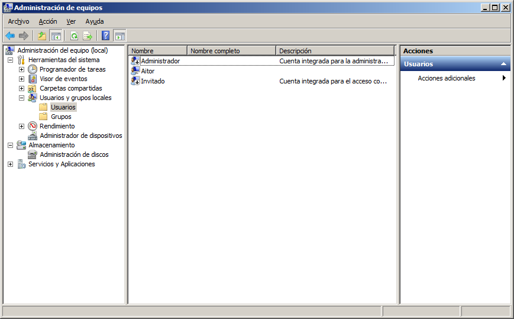
Feu clic amb el botó dret del ratolí en la columna central i escolliu l’opció Usuari nou, per afegir un nou usuari al sistema:
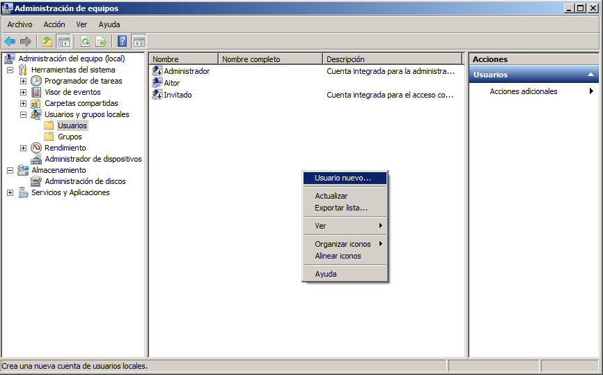
En la pantalla següent heu d’especificar:
Nom d’usuari. Introduïu aquí el nom amb què l’usuari es validarà en el sistema. Aquest nom no pot superar en cap cas els vint caràcters i no ha de contenir caràcters especials, accents o espais.
Nom complet. Serveix per identificar l’usuari dins el sistema, no per fer l’inici de sessió (login). En aquest cas podeu assignar el vostre nom i cognoms.
Descripció. En aquest camp podeu especificar certa informació que ajudi a identificar l’usuari, com a exemple en podríem facilitar l’extensió telefònica, el grup de recerca, el departament a què pertany, etc.
Contrasenya. Aquest camp no és obligatori. Si afegim una contrasenya obliguem l’usuari a escriure’n una quan es connecti. En no ser un camp obligatori, es pot deixar en blanc, però és molt recomanable no fer-ho. El seu límit està marcat en més de mil caràcters.
Confirmar contrasenya. S’utilitza per validar la contrasenya introduïda en el camp anterior. Si aquestes dues caixes de text contenen el mateix valor, la contrasenya serà acceptada. En cas contrari n’haurem d’assignar una altra.
Opcions de contrasenyes. En aquest punt podem especificar les opcions per administrar les contrasenyes de l’usuari. Es pot especificar:
L’usuari ha de canviar la contrasenya en el inici de sessió següent. La propera vegada que l’usuari accedeixi al sistema haurà de modificar la contrasenya i assignar-se’n una de nova.
L’usuari no pot canviar la contrasenya. Activant aquesta opció l’usuari creat mai no podrà modificar la seva contrasenya.
La contrasenya mai no expira. La contrasenya introduïda no caduca mai. Si no activem aquesta opció ho farà cada quaranta-dos dies.
El compte està deshabilitat. Podem escollir aquesta opció si de moment no volem que l’usuari accedeixi al sistema. Activeu aquesta opció i intenteu accedir al sistema utilitzant el compte acabat de crear.
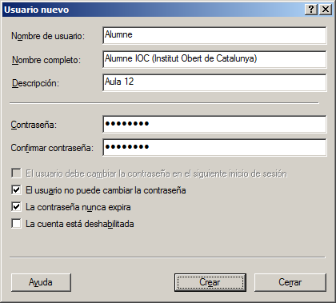
Si feu clic amb el botó dret a sobre d’un usuari de creació recent, us apareixerà una pantalla com la que es mostra a continuació:
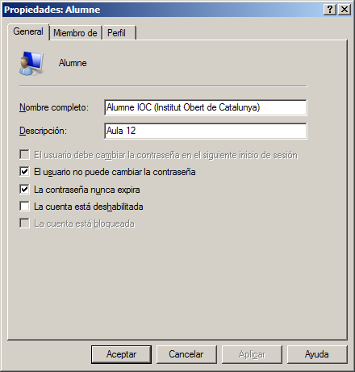
Aquí podreu modificar tot el relacionat amb la identificació dels usuaris i la gestió de les seves contrasenyes, però no podreu modificar ni el login (nom d’usuari) ni la contrasenya.
En la segona pestanya, Membre de, podem indicar a quin grup o grups d’usuaris volem que pertanyi l’usuari que acabem de donar d’alta. Per defecte, aquest pertany al grup Usuaris:
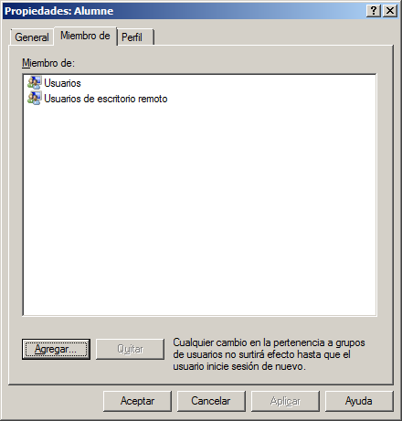
En la tercera pestanya, Perfil, podem trobar diferents opcions:
Ruta d’accés al perfil. Defineix la ruta d’accés al perfil de l’usuari. Els perfils proporcionen les opcions de configuració de l’entorn per a cada usuari. Cada vegada que un usuari inicia sessió en l’equip, el perfil que tingui assignat s’utilitza per determinar les opcions de configuració de l’escriptori i del tauler de control, la disponibilitat de les opcions en el menú i de les aplicacions, etc.
Arxiu d’ordres d’inici de sessió. Defineix la ruta en l’arxiu de seqüència d’ordres que s’ha d’executar cada vegada que l’usuari inicia sessió en el nostre equip. Els arxius de seqüència d’ordres d’inici de sessió són arxius per lots (batch) que s’executen quan un usuari inicia sessió.
Ruta d’accés local. Especifica el directori que l’usuari ha d’utilitzar per emmagatzemar els arxius personals. En aquest camp s’especifica un directori amb una ruta absoluta.
Connectar. S’utilitza per mapar, si és necessari, una unitat de xarxa.
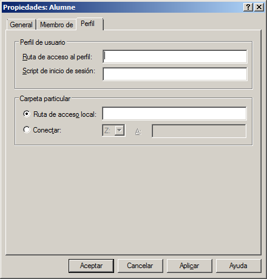
Un cop creat l’usuari, n’hem de modificar la contrasenya. Per fer-ho, farem clic amb el botó dret a sobre de l’usuari i escollirem l’opció Establir contrasenya. A continuació s’assigna una nova contrasenya a l’usuari.
Un cop modificada la contrasenya de l’usuari, habilitarem l’accés al sistema perquè pugui iniciar sessió en l’equip local. En aquest punt, a més, modificarem el nom complet i la descripció de l’usuari:
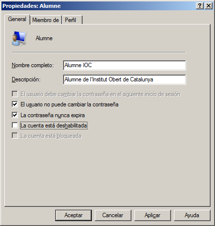
Per defecte, en fer una instal·lació del Windows 7, l’usuari administrador es crea de manera automàtica, el qual tindrà control total sobre el sistema. Si intenteu iniciar sessió amb aquest usuari, us adonareu que no podeu accedir al sistema, ja que aquest compte està deshabilitat.
Tot usuari amb accés deshabilitat al sistema es representa de la manera següent:
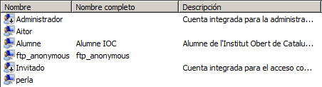
En aquesta imatge es mostren sis usuaris donats d’alta. L’usuari administrador i l’usuari convidat tenen l’accés deshabilitat per defecte.
Per permetre l’accés de l’usuari administrador, heu de repetir els passos descrits anteriorment per habilitar l’accés al sistema com si es tractés d’un usuari estàndard. Feu-hi doble clic i desactiveu l’opció El compte està deshabilitat:
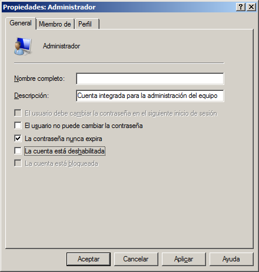
A partir d’aquest moment, l’usuari administrador ja pot accedir al sistema.
Accediu a la segona pestanya de les propietats de l’usuari. En aquesta pestanya podeu veure els grups a què pertany. Per defecte tot usuari acabat de crear pertany al grup Usuaris. En aquest cas, volem que aquest usuari tingui permisos administratius sobre el nostre equip amb la qual cosa afegirem el grup d’Administradors. Per fer-ho, feu clic a Agregar i, en el camp Escriviu els noms d’objectes que voleu seleccionar, escriviu Administradores i feu clic a Acceptar. A partir d’ara, aquest usuari ja pertany al grup d’administradors de l’equip:
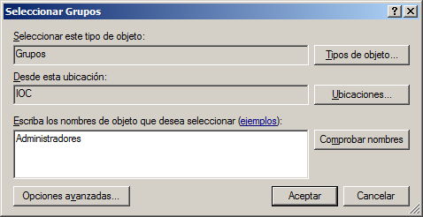
En cas de no conèixer exactament el nom del grup al qual volem afegir l’usuari, feu clic en el botó Opcions avançades, i en la pantalla de selecció de grups que us apareixerà feu clic a Buscar ara. En aquest cas, el resultat de la cerca us mostrarà tots els grups als quals podeu afegir l’usuari que esteu editant:
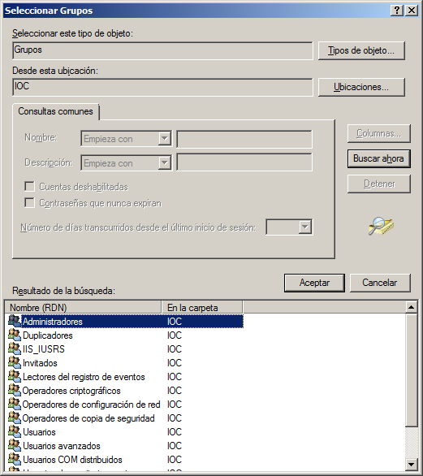
Un cop afegit l’usuari al grup d’administradors, elimineu la resta de grups de la pestanya Membre de. Per fer-ho, seleccioneu la resta de grups i feu clic a Treure:
El Control de comptes d’usuari del Windows és un conjunt de tecnologies que té com a objectiu evitar que programes maliciosos (malware) puguin causar problemes al sistema operatiu. Amb UAC, qualsevol aplicació s’executa sense permisos administratius a no ser que l’usuari ho configuri explícitament.
Per configurar una determinada aplicació perquè sempre s’executi amb privilegis importants, feu clic amb el botó dret a sobre de l’aplicació en qüestió. Busqueu una aplicació que probablement no tingui assignat un testimoni (token) administratiu, per exemple, MS Word.
Feu clic amb el botó dret sobre la seva icona i accediu a les propietats:
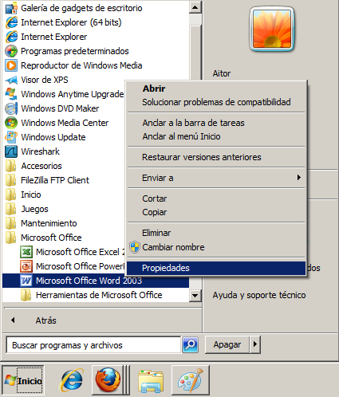
Un cop heu accedit a les propietats, aneu a la pestanya Compatibilitat, i seleccioneu l’opció Executar aquest programa com a administrador, i a continuació feu clic a Acceptar:
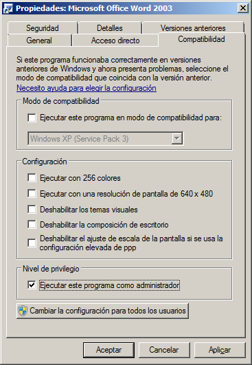
Si l’opció Executar aquest programa com administrador no està disponible, voldrà dir que aquesta aplicació està bloquejada perquè no es pugui executar sempre amb permisos administratius, l’aplicació no requereix credencials administratives o forma part de la versió actual del Windows 7.
Per configurar l’UAC heu d’iniciar sessió com a membres del grup local d’administradors. Feu clic a Inici\Tauler de control\Comptes d’usuari i protecció infantil\Comptes d’usuari, i feu clic a Canviar la configuració de control de comptes d’usuari. Veureu una finestra com aquesta:
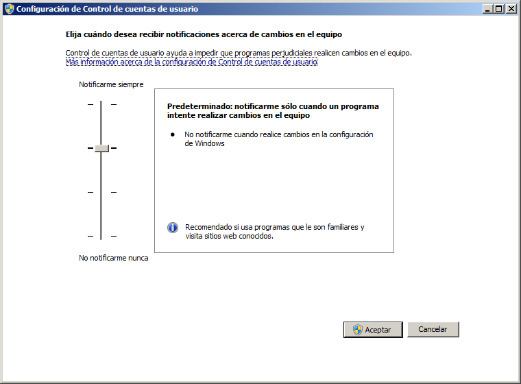
Podreu veure quatre nivells diferenciats:
Notificar-me sempre. Es notifica abans que els programes facin canvis en l’equip o en la configuració del Windows que requereixin els permisos d’un administrador. En la notificació que es mostra, l’escriptori s’atenua (escriptori segur) i no permet executar cap altra aplicació fins a acceptar o denegar la petició que es mostra (vegeu la figura posterior a aquesta enumeració).
Notificar-me només quan un programa intenti fer canvis en l’equip. Es notifica abans que un programa intenti fer canvis en l’equip. També es notifica si intenteu fer canvis en la configuració del Windows que requereixin permisos administratius o si un programa que es troba fora del Windows intenta fer canvis en una configuració.
Notificar-me només quan un programa intenti fer canvis en l’equip (no atenuar l’escriptori). Igual que l’anterior però no es notifica en l’escriptori segur, es a dir, es poden fer altres accions abans d’acceptar o cancel·lar la sol·licitud.
No notificar-me mai. No es notifica abans de fer canvis en l’equip. Els programes poden efectuar canvis en l’equip sense que l’usuari sigui informat. Si s’ha iniciat sessió com a usuari estàndard, les modificacions que requereixin permisos administratius seran denegades. Si es fa aquesta acció, s’ha de reiniciar l’equip per completar el procés de desactivació de l’UAC. Un cop desactivat, tots els usuaris que iniciïn sessió com a administrador sempre tindran els permisos d’un administrador.

En aquesta part de la pràctica aprendreu a utilitzar l’ordre net user per gestionar des de l’indicador d’ordres (command prompt) els usuaris del sistema operatiu.
Per fer aquesta part de la pràctica necessiteu accedir a l’indicador d’ordres del Windows 7. A més, l’heu d’executar amb permisos administratius perquè us permeti afegir i modificar els usuaris que teniu en el sistema (si únicament es tracta de fer-ne una llista, no són necessaris permisos administratius). Per fer-ho, adreceu-vos al Menú inici\Tots els programes\Accessoris. Feu clic amb el botó dret sobre Símbol del sistema, i seleccioneu Executar com a administrador. Podreu veure com s’obre una finestra com la següent:
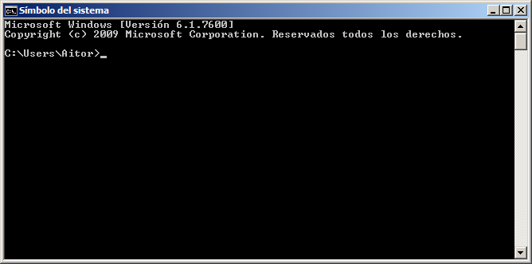
Per poder gestionar els comptes d’usuari del sistema amb l’indicador d’ordres, utilitzarem l’ordre net user. Per poder-ne comprovar la sintaxi, introduïu l’ordre:
net user /?
Introduïu l’ordre següent perquè es mostrin els comptes d’usuari del vostre equip.
net user
Veureu un resultat similar al que es mostra a continuació:
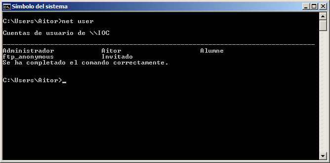
En aquest cas, podeu observar com hi ha cinc usuaris donats d’alta al sistema.
Ara mostreu els detalls d’algun dels usuaris que teniu actius en el sistema. Per fer-ho, utilitzeu l’ordre net user seguida del nom de l’usuari del qual voleu veure els detalls.
net user alumne
Veureu una sortida semblant a la següent:
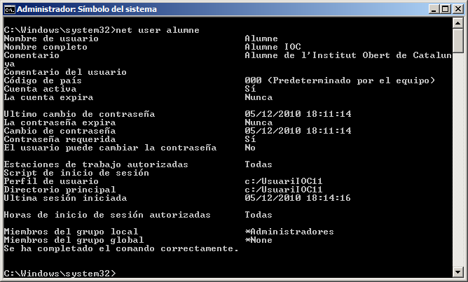
Per afegir usuaris al sistema, utilitzarem el paràmetre /add.
Creeu l’usuari perla introduint l’ordre següent:
net user perla /add
A continuació, li assignarem una contrasenya:
net user perla *
La qual haurem de repetir dues vegades.
Haurem obtingut un resultat semblant al següent:
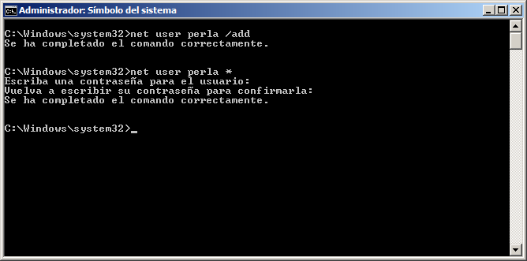
Si us hi fixeu, també li podeu assignar una contrasenya alhora que creeu un usuari introduint:
net user conan * /add
Amb això creareu l’usuari conan i li assignareu la contrasenya que vulgueu.
Comproveu que s’han creat els usuaris utilitzant:
net user
I, si voleu, utilitzant el mode gràfic utilitzat al principi de la pràctica.
Per eliminar usuaris del nostre sistema utilitzarem l’opció delete de la manera següent:
net user nomUsuari /delete
Ara elimineu l’usuari anomenat conan que hem creat anteriorment. Per fer-ho, heu d’introduir:
net user conan /delete
Obtindreu un resultat com el següent:
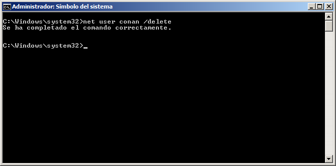
A continuació es mostren els passos necessaris per gestionar grups en el Windows 7.
En l’entorn d’ordres també podem modificar els grups als quals pertanyen els usuaris del sistema. En aquest cas, l’ordre utilitzada és:
net localgroup
Si introduïu aquesta ordre, podreu observar el nom de tots els grups que teniu actius en el vostre sistema.
Mostreu la sintaxi d’aquesta ordre introduint:
net localgroup /?
En els exercicis anteriors hem afegit l’usuari alumne al grup d’administradors. En aquest punt, eliminarem l’usuari d’aquest grup i el retornarem al grup d’usuaris.
Per fer-ho, primerament l’afegirem al grup Usuaris. Per afegir un usuari a un grup, utilitzarem:
net localgroup nomGrup nomUsuari /add
En aquest cas concret:
net localgroup usuaris alumne /add
Per comprovar que el grup Usuaris s’ha afegit correctament torneu a executar:
net user alumne
Obtindreu una sortida com aquesta:
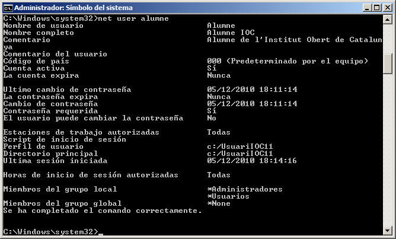
Finalment treieu l’usuari alumne del grup d’administradors utilitzant l’ordre següent:
net localgroup nomGrup nomUsuari /delete
En aquest cas concret:
net localgroup administradores alumne /delete
Comproveu que, efectivament, en les propietats de l’usuari ja no apareix el grup d’administradors.
Per veure els detalls d’un grup concret podeu fer servir la sintaxi següent:
net localgroup nomGrup
En aquest cas, comproveu els detalls del grup d’administradors i d’usuaris introduint:
net localgroup administradores
net localgroup usuarios
Veureu una llista de tots els usuaris del sistema que pertanyen a aquest grup.
En aquest punt crearem un nou grup en el nostre equip. El grup en qüestió s’anomenarà grupIOC i hi afegirem tots els usuaris amb rols d’alumne que tinguin accés al sistema.
Per crear aquest grup introduïu l’ordre:
net localgroup grupIOC /ADD /COMMENT:“Grup creat en la pràctica”
Mostreu els detalls del grup. Haureu d’obtenir un resultat com el que es mostra a continuació:
Finalment, afegiu l’usuari alumne al grup que acabeu de crear i mostreu l’estat final del grup introduint les ordres següents:
net localgroup grupIOC alumne /add
net localgroup grupIOC
Obtindreu un resultat semblant al següent:
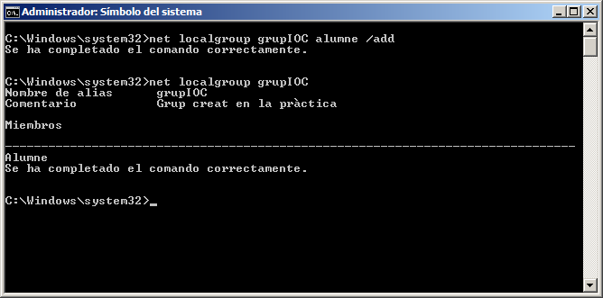
Per eliminar un grup heu d’utilitzar el paràmetre /delete de la manera següent:
net localgroup nomGrup /delete
Elimineu el grup creat anteriorment (grupIOC). Per fer-ho correctament heu d’introduir l’ordre:
net localgroup grupIOC /delete
Un cop introduïda aquesta ordre haureu eliminat de manera permanent aquest grup del sistema.